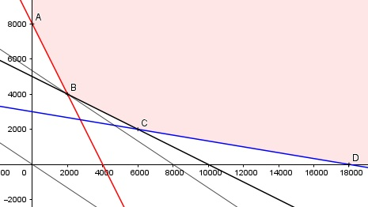

Aufgabe 77 Die Bonbonmischung A enthält 10% Karamell, 20% Drops und 10% Fruchtbonbons. Die Mischung B enthält 20% Karamell, 10% Drops und 60% Fruchtbonbons. A kostet 8 € pro kg, B 12 €/kg. Eine neue Mischung aus A und B soll mindestens 1 kg Karamell, 0,8 kg Drops und 1,8 kg Fruchtbonbons enthalten. Wieviel kg von A und B sind nötig, wenn die Mischung möglichst billig sein soll? x = g von A y = g von B 10% = 0,1 usw. 1 kg = 1 000 g 8 €/kg = 0,008 €/g Bedingungen: Karamell: 0,1x + 0,2y ≥ 1 000 Drops: 0,2x + 0,1y ≥ 800 Fruchtbonbons: 0,1x + 0,6y ≥ 1 800 x > 0 x ∈ ℕ y > 0 y ∈ ℕ Zielfunktion: M = 0,008x + 0,012y Randgerade 1: 0,2x + 0,1y = 800 Randgerade 2: 0,1x + 0,2y = 1 000 Randgerade 3: 0,1x + 0,6y = 1 800

Die Eckpunkte A, B, C und D bilden die Begrenzung für das Planungsgebiet, das alle Ungleichungen erfüllt. A ist der Schnittpunkt der Randgerade 1 und der y-Achse 0,2x + 0,1y = 800 0,1y = 800 |:0,1 y = 8 000 A(0|8 000) B ist der Schnittpunkt der beiden Randgeraden 1 und 2 0,2x + 0,1y = 800 |-0,2x 0,1y = 800 - 0,2x |:0,1 y = 8 000 - 2x Eingesetzt in 2: 0,1x + 0,2 * (8 000 - 2x) = 1 000 0,1x + 1 600 - 0,4x = 1 000 |+0,3x - 1 000 0,3x = 600 |:0,3 x = 2 000 Eingesetzt: y = 8 000 - 2 * 2 000 = 4 000 B(2 000|4 000) C ist der Schnittpunkt der beiden Randgeraden 2 und 3 0,1x + 0,2y = 1 000 |-0,1x 0,2y = 1 000 - 0,1x |:0,2 y = 5 000 - 0,5x Eingesetzt in 3: 0,1x + 0,6 * (5 000 - 0,5x) = 1 800 0,1x + 3 000 - 0,3x = 1 600 |+0,2x - 1 800 0,2x = 1 200 |:0,2 x = 6 000 Eingesetzt: y = 5 000 - 0,5 * 6 000 = 2 000 C(6 000|2 000) D ist der Schnittpunkt der Randgerade 3 und der x-Achse 0,1x + 0,6 * 0 = 1 800 |:0,1 x = 18 000 D(18 000|0) Die Parallele der Zielfunktion M liegt in B am tiefsten --> Mmin = 0,008 * 2 000 + 0,012 * 4 000 = 64 € --> man braucht von der Mischung A 2 000 g = 2 kg und von B 4 000g = 4 kg.